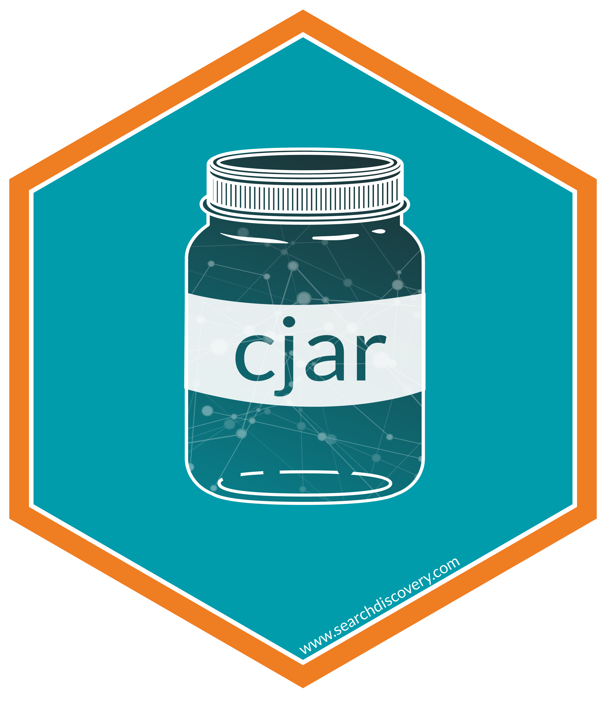

An R Client for the CJA API
Connect to the CJA API, which powers CJA Workspace. The package was developed with the analyst in mind and will continue to be developed with the guiding principles of iterative, repeatable, timely analysis. New features are actively being developed and we value your feedback and contribution to the process. Please submit bugs, questions, and enhancement requests as issues in this Github repository.
Install the package (recommended)
# Install from CRAN
install.packages('cjar')
# Load the package
library(cjar)Install the development version of the package
# Install devtools from CRAN
install.packages("devtools")
# Install adobeanayticsr from github
devtools::install_github('searchdiscovery/cjar')
# Load the package
library(cjar) Current setup process overview
There are four setup steps required to start accessing your Customer Journey Analytics data. The following steps are each outlined in greater detail in the following sections:
- Create an Adobe Console API Project
- Create and add the JWT arguments to your
.Renvironfile. - Get your authorization token by using the function
cja_auth(). - Get the
Data View IDby using the functioncja_get_dataviews().
1. Create an Adobe Console API Project
When using JWT authentication, you only need an Adobe Console API project for each organization you are needing to access.
Once you are a developer for a CJA product profile, you can create an API client in the Adobe Developer Console.
- Navigate to console.adobe.io.
- Check the organization name in the top right to make sure that you are logged in to the correct company.
- Click Create new project.
- Click Add API.
- Click Customer Journey Analytics, then click Next.
- Click Generate Keypair.
- A config.zip file is automatically downloaded to your local machine. Keep this config folder in a secure location, as it contains your only copy of your private key. See steps … for what to do with the private.key file.
- Click Next.
- Select the desired product profiles for the service account. Make sure that it contains the right permissions to access the API. Click Save configured API.
- Back on the project’s home page, click Add to project > API.
- Click Adobe Experience Platform, then click Next.
- You already generated a keypair when creating the Adobe Analytics API, so you do not need to create another. Click Next.
- Select the desired product profiles for the service account. Make sure that it contains the right permissions to access the API. Click Save configured API.
- Click on “Service Account (JWT)” under “CREDENTIALS” in the left
column. Locate the “Download JSON” button on the top right and click it
to download the service account JSON file. Alternatively, you can
manually create this file by copying and pasting the Client ID, Client
Secret (click “Retrieve client secret”), Technical Account ID, and
Organization ID into a
.jsonfile. Reference?cja_authfor more information on the variables needed. Using the preconfigured JSON file is the easiest method. - Locate the config.zip file that automatically downloaded in step 6. Unzip the file and move the ‘private.zip’ to your desired location. The location of this file will be needed as the value of the CJA_PRIVATE_KEY variable.
2. Set up the .Renviron file
This file is essential to keeping your information secure. It also speeds up analysis by limiting the number of arguments you need to add to every function call.
- If you do not have an
.Renvironfile (if you have never heard of this file you almost certainly don’t have one!), then create a new file and save it with the name.Renviron. You can do this from within the RStudio environment and save the file either in yourHomedirectory (which is recommended; click on the Home button in the file navigator in RStudio and save it to that location) or within your project’s working directory. You can also use the “usethis” package to create the file by running the functionedit_r_environ(scope = "user") - Add the 2 variables, listed below, to the
.Renvironfile using the file location path for both, the json (auth) file and the private key file. The format of variables in the.Renvironfile is straightforward.
## JWT creds ##
CJA_AUTH_FILE=filelocation.json
CJA_PRIVATE_KEY=private.keyAfter adding these 2 variables to the .Renviron file and
saving it, restart your R session (Session > Restart
R in RStudio) and reload the package
(library(cjar)).
3. Get your access token
The token is actually a lonnnnng alphanumeric string that is the what ultimately enables you to access your data:
- In the console, enter
cja_auth()and press Enter. - In the Console window you should see “Successfully authenticated with JWT: access token valid until ….”
- If you do not see this message then go back and repeat the previous steps to make sure you did not miss something.
4. Get the Data View ID
All data in CJA is located in Data Views, similar to Report Suites in Adobe Analytics. Before pulling data it is essential to locate the data view id you are attempting to pull from.
#Pull a list of available data views
dv <- cja_get_dataviews(expansion = c('name', 'description'))
#note: see function documentation for all availabe expansion metadata available.Once you have the data view ID you want then you can begin pulling data using the different functions.